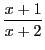
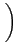
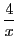
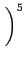
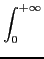
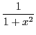
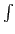

Next: Programs
Up: Level types
Previous: Comments
Expression editor
Typing the shortcut Alt-e
or using the menu Expression->New expression will
open an expression editor above the current level. The scientific
keyboard should automatically appear (press the
 button at the
top right of the keyboard if you don't want it).
button at the
top right of the keyboard if you don't want it).
The expression editor lets you enter complex mathematical expression
in 2-d like on a paper.
For example suppose we want to enter

. 
3 + 
-
x + 1 , this will select x + 1
/ (for the division)
-
x + 2
- * 3 + 4 / x
-
^ 5
You can now move the selection in the tree of the expression
with the arrows keys :
- moves up one level in the tree, that is select the
function or operator with had the current selection as argument
(it also selects the other arguments of the function/operator)
-
moves down one level in the three, that is select
the first argument of the function/operator of the current selection
-
or
select the left or right brother
of the current selection
- Ctrl-
or Crtl-
exchange the current selection
with it's left or right brother
Another example, let's enter

Type Alt-e to open a new expression editor
- the  key on the scientific keyboard or Ctrl-S on
the keyboard, we now have an undefined integral
- the
, key will switch to a defined integral (to do the
reverse operation, one would select each bound and press the backspace
key)
-
, replace 0 by the function
1/(1+x^2)
and
-
to select the upper bound
- the key on the scientific keyboard to replace the 1
- the Enter key to evaluate the integral
We know list the other special keys in the expression editor:
,: if a sequence is selected, add a 0 to the end of the
sequence and select it. If the selection is not a sequence, creates
a sequence of size 2 with first element the selection, init the second
element to 0 and select it. You can move the newly created 0 in the
sequence with Ctrl-
and Ctrl-
.
(: if a sequence is selected, make a user function
applied to this sequence, the name of the user function is initialized
to f and selected (type the function name to replace
the f by your function name). If a vector is selected, it is replaced
by a sequence.
[: if a sequence is selected, it is replaced by a vector,
if a vector is selected, an indexed vector/matrix position is created
where the variable name of the vector/matrix is initialized to
m and selected (type the matrix/list name to replace m)
- keys in combination with the Ctrl key
- Ctrl-A: select All
- Ctrl-C: Copy selection to clipboard (like under windows)
- Ctrl-V: Paste selection from clipboard
- Ctrl-T: translate selection to LATEX and copy to clipboard
(the translation is also copied to the
Msg output, click
on the Msg button to make it visible or not)
- Ctrl-E: eval selection
- Ctrl-F: factor selection
- Ctrl-N: apply normal on selection
- Ctrl-P: apply partfrac on selection
- Ctrl-I (or Tab key) completion key (position in index at the function
whose name begins the same)
- Ctrl-S: integral
- Ctrl-L: limit
- Ctrl-D: derivative
- Ctrl-Z: undo
- Ctrl-Y: redo
Next: Programs
Up: Level types
Previous: Comments
giac documentation written by Bernard Parisse